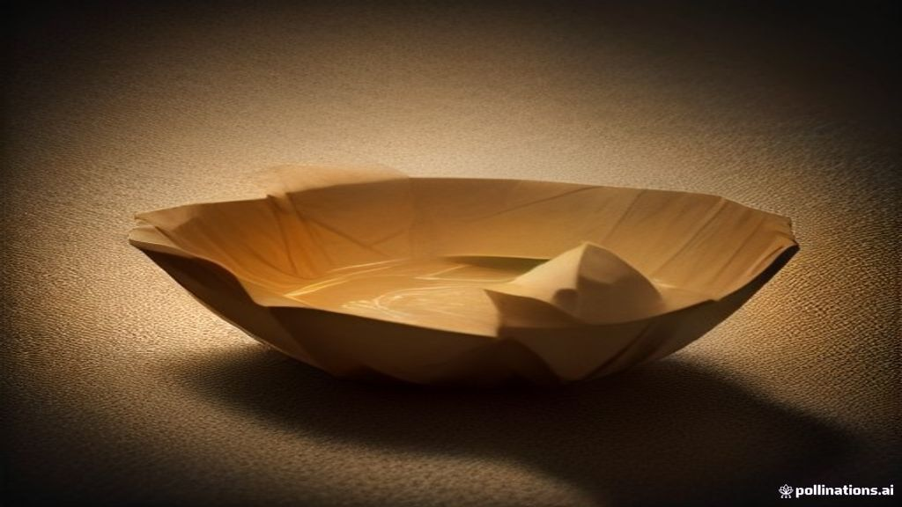

How Paper Boat Sold ₹100 Aam Panna by Selling Childhood Memories Instead of Juice
In a bustling Gurugram office in the early 2010s, four corporate veterans – Neeraj Kakkar, James Nuttall, Suhas Misra, and Neeraj Biyani – shared a lunch. Suhas Misra's mother had packed him some homemade aam panna, the refreshing raw mango drink. James Nuttall, an American co-founder, tasted it and asked a simple question: "Where can I buy more of this?"
The answer, they quickly realised, was "nowhere" in a packaged, branded format. This moment sparked an idea that would challenge the giants of the Indian beverage industry, sell aam panna for ₹100 a litre when competitors offered juices at a fraction of the price, and build a brand worth ₹1,620 crore by bottling not just drinks, but memories themselves.
The World Before
Before Paper Boat set sail in 2013, India's organised beverage market was a landscape dominated by a few Goliaths. Global cola brands like Coca-Cola and PepsiCo held sway, their sugary, carbonated offerings filling most retail shelves. Alongside them were mainstream fruit juices, often focused on common flavours like orange and apple, or mango-based drinks like Maaza and Frooti, which, while popular, lacked a deep cultural resonance beyond their taste.
Traditional Indian beverages – the aam panna that defined summer afternoons, the spicy jaljeera that cut through the heat, the tangy kokum from the Konkan coast – largely existed outside this modern retail ecosystem. They were homemade concoctions, street vendor specialties, or regional treasures passed down through generations. There was no national packaged brand bringing these authentic flavours to consumers at scale. The market perceived these as simple, low-cost drinks, often associated with unorganised, unhygienic preparation. To imagine selling them in sleek, modern packaging at a premium price point seemed, to many, either foolish or impossible.
Consumers, particularly the burgeoning urban middle class, were increasingly exposed to globalised tastes and packaged convenience, yet a deep, unspoken longing for the simpler, authentic tastes of their childhood persisted. This was the overlooked whitespace that Hector Beverages, the parent company founded by Kakkar and his team in 2009, decided to navigate after initial ventures into protein and energy drinks (Frissia and Tzinga) didn't gain significant traction.
The Crack
Paper Boat launched in August 2013, with Aam Panna and Jaljeera as its flagship offerings. From the outset, their strategy was audacious. They were not just introducing new drinks; they were attempting to formalise an entirely new category: traditional Indian beverages.
Crucially, they chose to price their products significantly higher than competitors. While a 200ml Tetra Pak of a mainstream juice might cost ₹20-25, a 250ml Paper Boat pouch of Aam Panna was priced at ₹30-35, and a 1-litre pack at ₹80-100. This premium pricing was a calculated risk in a price-sensitive market, but it was justified by a commitment to authenticity and quality – no artificial colours, preservatives, or additives. Sourcing raw materials like purple carrots for Kanji even involved procuring seeds from Turkey and working with local farmers to ensure consistency.
But the real genius lay in their marketing. Paper Boat didn't talk about ingredients or health benefits first; it spoke directly to the heart. Their tagline, "Drinks and Memories," encapsulated their core philosophy. Their advertising campaigns were wordless, animated vignettes that evoked universal childhood experiences: children chasing summer trains, playing in the monsoon rain, or grandmothers making drinks. These were not just ads; they were emotional invitations, designed to trigger a "limbic imprint" – a stored emotion or memory.
The packaging itself became a storyteller. Each pastel-coloured, gently curved pouch featured hand-drawn illustrations and short stories or poems that recalled specific childhood moments. The Aam Panna pack might speak of stolen mangoes and summer vacations, turning a simple drink into a portal to the past. This design, developed in partnership with Elephant, one of India's oldest design studios, was integral to the brand's identity. Co-founder Neeraj Kakkar emphasised that for consumer brands, design is a "big catalyst in tempting trial".
Their target audience was smartly defined: 25-40 year olds who had likely moved away from their hometowns and missed these traditional tastes. Paper Boat's strategy was to create an "emotional moat," a connection so deep that it transcended mere product features. As Neeraj Kakkar stated, the team aimed to "preserve traditional Indian recipes, but present them in a way that engages modern, young consumers." This consistency in evoking nostalgia across every touchpoint – name, packaging, ads, social media – made the brand unforgettable.
Initially, the journey wasn't without its bumps. In 2015-16, Paper Boat faced a crisis when sales plateaued, and some product lines had to be discontinued as they had expanded too quickly with flavours that didn't resonate. Co-founders Suhas Misra and James Nuttall also exited the company in 2014 and 2015 respectively. However, Kakkar and Biyani refined their core flavours, improved consistency, and focused on distribution, ensuring that customers could easily find the products they loved. They also diversified into traditional Indian snacks like chikki in 2016, further cementing their position as a purveyor of nostalgic Indian tastes.
What Happened Next
Paper Boat's unique approach resonated deeply with Indian consumers. The brand moved from strength to strength, establishing itself as a leader in the ethnic ready-to-drink beverage segment. By FY2019, Hector Beverages reported a revenue of ₹189.56 crore ($26.1 million), a 62% increase from FY2018, and further grew to ₹235 crore ($32.3 million) in FY2020. By FY2021, operating revenue reached ₹243 crore.
The company continued to attract significant investor interest. By August 2022, Paper Boat had raised a total of $153.4 million across 15 funding rounds, with its latest Series C round in August 2022 securing $48.5 million from GIC, a Singapore sovereign fund. This round valued the company at $201 million (approximately ₹1,610 crore). By May 2025, the brand's estimated valuation reached ₹1,620 crore.
Paper Boat expanded its distribution to over 20,000 retail outlets across India, including major e-commerce platforms, coffee chains like Barista, and even airlines such as Indigo and Jet Airways. They also introduced larger 1-litre Tetra Prisma Aseptic cartons in 2017 to expand into the multi-serve category. By FY2025, Paper Boat's revenue was projected to hit ₹668 crore, with losses narrowing significantly to under ₹50 crore from ₹90.56 crore in FY2023. The brand also achieved over 30% market share in the ethnic ready-to-drink beverage segment. Paper Boat also expanded internationally, catering to NRIs in countries like Dubai, Malaysia, the UK, and the US.
Lessons to Take Away
- Emotion Trumps Function (and Price): In a market saturated with functional products, Paper Boat proved that a deep emotional connection can justify a premium price point. They didn't sell juice; they sold a feeling, a memory, a piece of childhood. This emotional moat is difficult for competitors to replicate and creates fierce customer loyalty.
- Category Creation, Not Just Competition: Instead of battling giants in existing categories, Paper Boat identified and effectively created a new niche: traditional Indian packaged beverages. This allowed them to define the rules, build brand equity, and achieve significant market share without direct, head-on competition with established players in their initial years.
- Consistency Across All Touchpoints: Paper Boat's success wasn't due to a single ad campaign but to a relentless consistency in its brand message. From the name and packaging design to wordless animated ads and social media content, every interaction reinforced the narrative of nostalgia and authentic Indian heritage. This created an unmistakable brand identity.
- Authenticity and Quality as Foundational Pillars: While nostalgia was the hook, the product's quality and authenticity were the anchors. By committing to no artificial preservatives and sourcing traditional ingredients, Paper Boat built trust. This commitment was crucial, especially after initial challenges, ensuring that the nostalgic taste lived up to the memory.
References
- StartupTalky — Comprehensive overview of Paper Boat's history, founders, funding, and revenue.
- The Hard Copy — Detailed look at Paper Boat's brand and design decisions, including quotes from founders.
- Paper Boat - Wikipedia — General information on Paper Boat's history, products, and funding.
- How Paper Boat Bottled Nostalgia into a Marketing Powerhouse | by Ashish Dhyani — Article detailing Paper Boat's emotional branding and marketing strategies.
- How Paper Boat started - varchas.store — Explains the initial problem Paper Boat aimed to solve and its early product strategy.
- Paper Boat Revenue, Valuation, Funding & Investors - Multiples.vc — Financial data including valuation, revenue, and funding rounds.
- How Paper Boat Rewrote Nostalgia Into A Marketing Strategy - Brands Pe Charcha — Discusses Paper Boat's marketing strategy and its focus on emotional storytelling.
- How Paper Boat Drinks built a brand on nostalgia! — Analysis of Paper Boat's target audience and consistent marketing efforts.
- Paper Boat's Insight into Nostalgia-Based Consumption - MarkHub24 — Examines the market situation before Paper Boat and its distinct positioning.
- MBA Case Study: Paper Boat And Its Marketing Strategies - Unstop — Provides insights into the founding idea and marketing success factors.
- The Rise of Paper Boat — How Nostalgia Became India's Most Distinctive Beverage Brand Strategy | The Black Apex Consultancy — Highlights the market problem and Paper Boat's core strategy using nostalgia.
- Paper Boat to raise $50 Mn from GIC Singapore - Entrackr — Details on recent funding rounds and revenue.
- Analysis of Paperboat's Marketing Strategy - IJARIIT — Discusses pricing strategy relative to competitors and marketing mix.
- From Childhood Memories to Market Success: The Paper Boat Story | by Navsrujan | Medium — Covers early challenges, the breakthrough with nostalgia, and lessons.
- We want to take Paper Boat global: Hector Beverages' Neeraj Kakkar - BrandEquity — Interview with Neeraj Kakkar on challenges and sourcing.
- Paper Boat: From Nostalgia to National Favourite Worth ₹1620 Crores - Equentis — Latest valuation and revenue figures.
- Paper Boat Foods - 2026 Latest Shareholding & Valuation - Tracxn — Provides current valuation and shareholding structure.